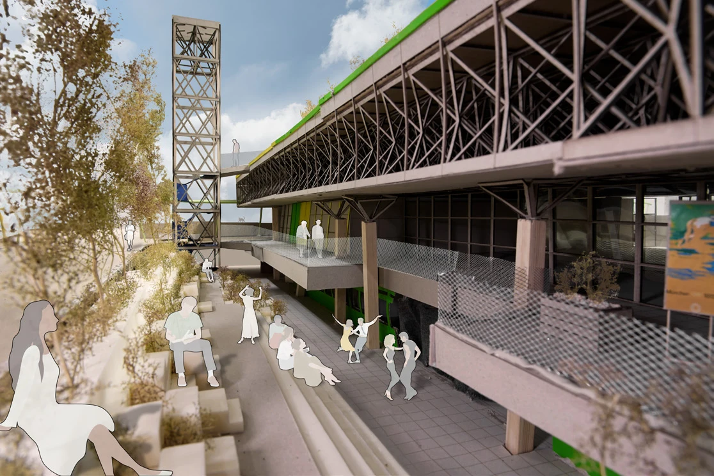

Studienprojekt · Städtebau
Raum für Alltag
Der Entwurf für die Umnutzung des ökumenischen Kirchenzentrums im Olympiadorf entstand im Austausch mit der Nachbarschaft. An einem Modell im Maßstab 1:33 konnten die Beteiligten neue Nutzungen gemeinsam erproben.

- Ort
- Olympiadorf, München
- Kontext
- Hochschule München · Städtebaulicher Entwurf
- Semester
- Sommersemester 2025
Die Zeichnung
Gezielte Öffnungen im bestehenden MERO-Tragwerk schaffen Platz für gemeinschaftliche Nutzungen und neue Verbindungen.
 Zeichnung vergrößern
Zeichnung vergrößern
Der Raum
Das Treppenpodest zeigt, wie Erschließung und alltägliche Begegnungen im selben Raum Platz finden können.